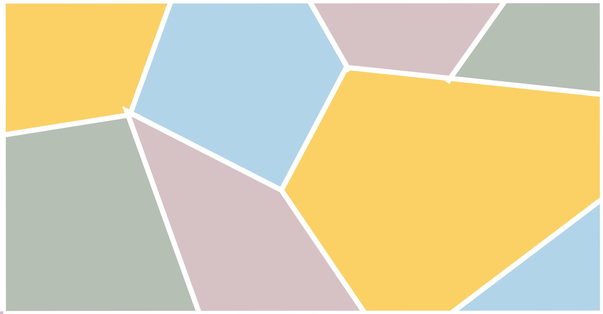

<html>
<head>
<title> Overlays the wall design</title>

<style>
wall {width:100%;
    position:fixed;
    display: block;
    top: 0;
    left: 0;
    opacity: 50%;
}

body, html {
  height: 100%;
}

.bg { 
  /* The image used */
  background-image: url("./wall.jpg");
  /* Full height */
  height: 100%; 
  /* Center and scale the image nicely */
  background-position: center;
  background-repeat: no-repeat;
  background-size: cover;
}

video{
    width: 100%;
    opacity: 50%;
}

</style>

</head>
<body>

<!-- Replace this with your image. Make sure CORS settings allow reading the image! -->
<div class="bg">
    <video id="video" autoplay muted playsinline></video>
    <canvas id='canvas' width=100% style="display:none"></canvas>    
</div>
<!--  -->
<script>


  (async () => {
 
    const video = document.getElementById('video');
    const canvas = document.getElementById('canvas');
    const context = canvas.getContext('2d');


    const stream = await navigator.mediaDevices.getUserMedia({audio:false, video:{facingMode:'environment'}})

    // stream webcam
    video.srcObject=stream
    render()

  async function render() {
    context.drawImage(video,0,0,800,450)
    
  }

  })()


</script>
</body>
</html>